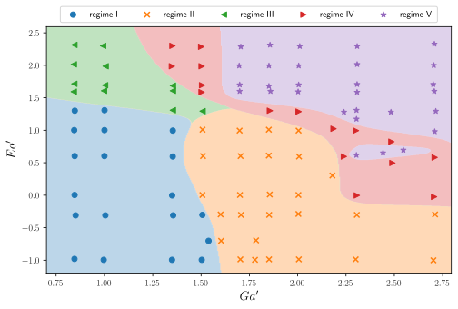

An introduction to supervised learning by example: path regime classification
Andre Weiner, Flow
Modeling and Control Group
Technical University of Braunschweig, Institute of Fluid Mechanics
Some warm-up questions ...
Machine learning (ML)?
Supervised machine learning?
difference between
- supervised ML,
- unsupervised ML,
- reinforcement learning?
Deep learning?
- synonym for ML
- algorithm to find cats in images/videos
- magical black box problem solver
- none of the above
(Deep) neural networks are used to solve
- supervised ML problems
- unsupervised ML problem
- reinforcement learning problems
- all of the above
Python?
- no idea
- I know what it is but I've never used it
- basic knowledge/experience
Jupyter notebooks?
- no idea
- I know what it is but I've never used it
- basic knowledge/experience
Outline
- ML terminology and notation
- Path regime classification
- Learning resources
Goal: understand when to use supervised ML
ML terminology and notation
Just enough to get you started ...
Features and Labels
| Feature 1 $Re$ | Feature 2 $\alpha$ | ... | Label 1 $c_d$ | Label 2 regime |
|---|---|---|---|---|
| 334 | 2 | ... | 0.123 | laminar |
| 334 | 4 | ... | 0.284 | laminar |
| 12004 | 2 | ... | 0.573 | turbulent |
| 12004 | 4 | ... | 0.834 | turbulent |
| ... | ... | ... | ... | ... |
Image source: Kitware Inc., Flickr
Supervised ML
Learning based on features and labels

Classification or regression?
Creating a transport model $\mu (T)$ based on experimental data ...
- regression
- classification
- could be both
Creating a wall function to for the turbulent viscosity in RANS simulations ...
- regression
- classification
- could be both
Impact behavior of a droplet on a surface ...
- regression
- classification
- could be both
Predict the stability regime of a rising bubble ...
- regression
- classification
- could be both
Feature and label vectors
$N$ samples of $N_f$ features and $N_l$ labels
| $i$ | $x_{1}$ | ... | $x_{N_f}$ | $y_{1}$ | ... | $y_{N_l}$ |
|---|---|---|---|---|---|---|
| 1 | 0.1 | ... | 0.6 | 0.5 | ... | 0.2 |
| ... | ... | ... | ... | ... | ... | ... |
| $N$ | 1.0 | ... | 0.7 | 0.4 | ... | 0.2 |
ML models often map multiple inputs to multiple outputs!
Feature vector
$$ \mathrm{x} = \left[x_{1}, x_{2}, ..., x_{N_f}\right]^T $$ $\mathrm{x}$ - column vector of length $N_f$
$$ \mathrm{X} = \left[\mathrm{x}_{1}, \mathrm{x}_{2}, ..., \mathrm{x}_{N_f}\right] $$ $\mathrm{X}$ - matrix with $N_s$ rows and $N_f$ columns
Label vector
$$ \mathrm{y} = \left[y_{1}, y_{2}, ..., y_{N_l}\right]^T $$ $\mathrm{y}$ - column vector of length $N_l$
$$ \mathrm{Y} = \left[\mathrm{y}_{1}, \mathrm{y}_{2}, ..., \mathrm{y}_{N_l}\right] $$ $\mathrm{Y}$ - matrix with $N_s$ rows and $N_l$ columns
In the artificial dataset from before ($Re$, $\alpha$, $c_d$, regime), what is the value of $N_f$ if we use all available features?
- 1
- 2
- 4
In the artificial dataset from before ($Re$, $\alpha$, $c_d$, regime), what is the value of $N_l$?
- 1
- 2
- problem dependent
ML model and prediction
$$ f_\mathrm{w} : \mathbb{R}^{N_f} \rightarrow \mathbb{R}^{N_l} $$ $f_\mathrm{w}$ - ML model with weights $\mathrm{w}$ mapping from the feature space $\mathbb{R}^{N_f}$ to the label space $\mathbb{R}^{N_l}$ $$ \hat{\mathrm{y}} = f_\mathrm{w}(x_1, x_2, ..., x_{N_f}) $$ $\hat{\mathrm{y}}$ - (model) prediction
Path regime classification
- Github repository
- path_regime_classification.ipynb
- open path_regime_classification.html in a browser

Source: M. K. Tripathi et al. 2015, figure 1.
Potential issues ...
assuming the decision boundary were created manually, e.g., using a graphical tool (Gimp, Inkscape, Photoshop, ...)
Extension to higher dimensions?
- easy
- hard
- impossible
Usage in software?
- easy
- hard
- impossible
Solution?
Supervised ML!
Data visualization
Feature distribution
What was different in the publication?
- scaling to range $0...1$
- normalization to zero mean and unity stdev
- logarithmic axis
Feature scaling
Scaled feature distribution
Issues with raw features?
- numerical stability
- high sensitivity to extreme data
- low sensitivity to extreme data
- unequal sensitivity to different features
- all of the above
Manual binary classification
Only regions I and II
$ Ga^\prime = log(Ga) $, $ Eo^\prime = log(Eo) $
$$ z(Ga^\prime, Eo^\prime) = w_1Ga^\prime + w_2Eo^\prime + b $$
$$ H(z (Ga^\prime, Eo^\prime)) = \left\{\begin{array}{lr} 0, & \text{if } z \leq 0\\ 1, & \text{if } z \gt 0 \end{array}\right. $$
Play with the sliders in the Jupyter notebook!
Finding the weights by means of optimization
Compact notation
Linearly weighted inputs $$ z_i=z(\mathrm{x}_i)=\sum\limits_{j=1}^{N_f}w_jx_{ij} $$
with $$ \mathrm{x}_i = \left[ Ga^\prime_i, Eo^\prime_i, 1 \right],\quad \mathrm{w} = \left[ w_1, w_2, b \right]^T $$
Binary encoding
True label: $$ y_i = \left\{\begin{array}{lr} 0, & \text{for region I }\\ 1, & \text{for region II} \end{array}\right. $$
Predicted label: $$ \hat{y}_i = H(z_i) = \left\{\begin{array}{lr} 0, & \text{if } z_i \leq 0\\ 1, & \text{if } z_i \gt 0 \end{array}\right. $$
Loss function
Loss function $$ L(\mathrm{w}) = \frac{1}{2}\sum\limits_{i=1}^N \left(y_i - \hat{y}_i(\mathrm{x}_i,\mathrm{w}) \right)^2 $$
The term in parenthesis can take the values
$1$, $0$, or $-1$.
Gradient decent
Simple update rule for the weights $$ \mathrm{w}^{n+1} = \mathrm{w}^n - \eta \frac{\partial L(\mathrm{w})}{\partial \mathrm{w}} = \begin{pmatrix}w_1^n\\ w_2^n\\ b^n \end{pmatrix} + \eta \sum\limits_{i=1}^N \left(y_i - \hat{y}_i(\mathrm{x}_i,\mathrm{w}^n) \right) \begin{pmatrix}Ga^\prime_i\\ Eo^\prime_i\\ 1 \end{pmatrix} $$
$n$ - current iteration, $\eta$ - learning rate
performing gradient decent for some iterations ...
the result ...
Issues with the perceptron algorithm?
Guaranteed convergence (zero loss)?
- yes
- no
- data dependent
Conditional probabilities
$$ p(y=1 | \mathrm{x}) $$speak: probability $p$ of the event $y=1$ given $\mathrm{x}$
$$ \hat{y} = f_\mathrm{w}(\mathrm{x}) = p(y=1 | \mathrm{x})$$model predicts class probability instead of class!
What is the expected value of $p(y=1 | \mathrm{x})$ for points far in region II?
- close to zero
- about 0.5
- close to one
What is the expected value of $p(y=1 | \mathrm{x})$ for points far in region I?
- close to zero
- about 0.5
- close to one
What is the expected value of $p(y=1 | \mathrm{x})$ for points close to the decision boundary?
- close to zero
- about 0.5
- close to one
What is the expected value of $p(y=0 | \mathrm{x})$ for points far in region I?
- close to zero
- about 0.5
- close to one
How to convert $z(\mathrm{x})$ to a probability?
- sinus: $\mathrm{sin}(z)$
- hyperbolic tangents: $\mathrm{tanh}(z)$
- sigmoid: $\sigma(z)$
sigmoid function $\sigma (z) = \frac{1}{1+e^{-z}}$
based on the perceptron classifier's weights ...
Joint probabilities - likelihood function
$$ l(\mathrm{w}) = \prod\limits_i^{N} p_i(y_i | \mathrm{x}_i, \mathrm{w}) $$principle of maximum likelihood
$$ \mathrm{w}^* = \underset{\mathrm{w}}{\mathrm{argmax}}\ l(\mathrm{w}). $$Which of the following is equivalent to $l(\mathrm{w}) = \prod\limits_i^{N} p_i(y_i | \mathrm{x}_i, \mathrm{w})$?
- $$ \prod\limits_i^{N} \left[ y_i^{\hat{y}_i} (1-y_i)^{(1-\hat{y}_i)}\right] $$
- $$ \prod\limits_i^{N} \left[ \hat{y}_i^{y_i} (1-\hat{y}_i)^{(1-y_i)}\right] $$
Log-likelihood and binary cross entropy
$$ \mathrm{log}(l(\mathrm{w})) = \sum\limits_{i=1}^N y_i \mathrm{ln}(\hat{y}_i) + (1-y_i) \mathrm{ln}(1-\hat{y}_i) $$
$$ L(\mathrm{w}) = -\frac{1}{N}\sum\limits_{i=1}^N y_i \mathrm{ln}(\hat{y}_i) + (1-y_i) \mathrm{ln}(1-\hat{y}_i) $$
performing gradient decent for some iterations ...
the result ...
Next step: separating region I from region II and III
First: two linear models
Recipe to combine the two linear models:
- compute weighted sum of individual models
- convert the weighted sum to a probability using $\sigma$
combined linear models
Almost there - extension to multiple classes
One hot encoding
What is the length of the label vector if we have 10 classes (regimes)?
- 1
- 2
- 5
- 10
What does the label vector look like if we have 4 classes and the true label is class 3 / regime 3?
- $\mathrm{y}_i = \left[ 1, 0, 0, 0 \right]^T$
- $\mathrm{y}_i = \left[ 0, 0, 1, 0 \right]^T$
- $\mathrm{y}_i = \left[ 1, 0, 1, 0 \right]^T$
- $\mathrm{y}_i = \left[ 0, 0, 3, 0 \right]^T$
Softmax function and categorical cross entropy for $K$ classes:
$$ p(y_{j}=1 | \mathrm{x}) = \frac{e^{z_{j}}}{\sum_{j=0}^{K-1} e^{z_{j}}} $$
$$ L(\mathrm{w}) = -\frac{1}{N} \sum\limits_{j=0}^{K-1}\sum\limits_{i=1}^{N} y_{ij} \mathrm{ln}\left( \hat{y}_{ij} \right) $$
Implementation in PyTorch
class PyTorchClassifier(nn.Module):
'''Multi-layer perceptron with 3 hidden layers.
'''
def __init__(self, n_features=2, n_classes=5, n_neurons=60, activation=torch.sigmoid):
super().__init__()
self.activation = activation
self.layer_1 = nn.Linear(n_features, n_neurons)
self.layer_2 = nn.Linear(n_neurons, n_neurons)
self.layer_3 = nn.Linear(n_neurons, n_classes)
def forward(self, x):
x = self.activation(self.layer_1(x))
x = self.activation(self.layer_2(x))
return F.log_softmax(self.layer_3(x), dim=1)
Hurray!
THE END
Thank you for you attention!
Where to go from here?